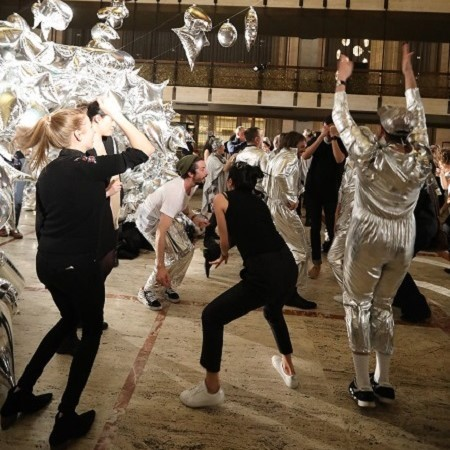
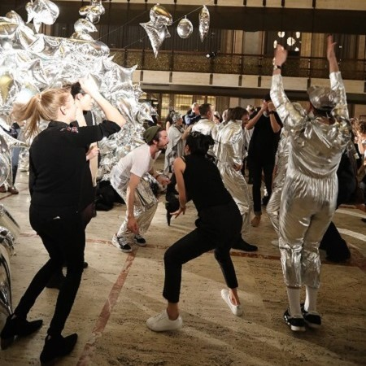
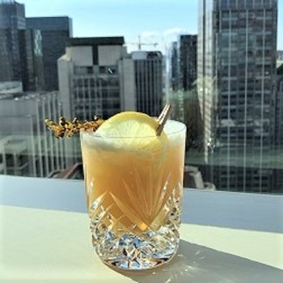
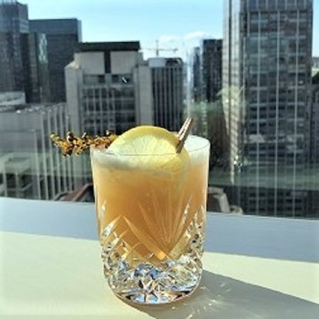

Personism refers to a form of poetry coined by Frank O'Hara in which the writing, (poem, in his example) is written directly towards another person. I particularly like the essence of the movement, and here is a little of his work to enjoy.
"
Everything is in the poems, but at the risk of sounding like the poor wealthy man’s Allen Ginsberg I will write to you because I just heard that one of my fellow poets thinks that a poem of mine that can’t be got at one reading is because I was confused too. Now, come on. I don’t believe in god, so I don’t have to make elaborately sounded structures. I hate Vachel Lindsay, always have, I don’t even like rhythm, assonance, all that stuff. You just go on your nerve. If someone’s chasing you down the street with a knife you just run, you don’t turn around and shout, "Give it up! I was a track star for Mineola Prep." That’s for the writing poems part. As for their reception, suppose you’re in love and someone’s mistreating (mal aimé) you, you don’t say, "Hey, you can’t hurt me this way, I care!" you just let all the different bodies fall where they may, and they always do ‘flay after a few months. But that’s not why you fell in love in the first place, just to hang onto life, so you have to take your chances and try to avoid being logical. Pain always produces logic, which is very bad for you.


 



 
